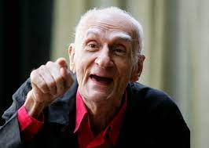

Ariano Suassuna Idealizador do Movimento Armorial
Obras de Ariano Suassuna

Ariano_Suassuna
Uma mulher vestida de Sol (1947)
Cantam as harpas de Sião ou O desertor de Princesa (1948)
Os homens de barro (1949)
Auto de João da Cruz (1950)